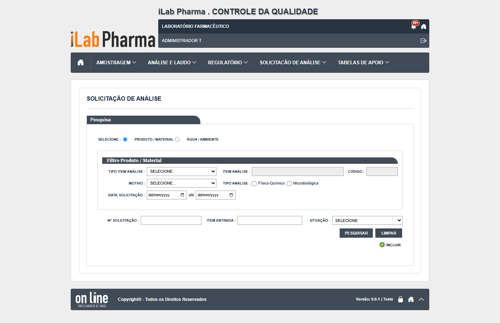
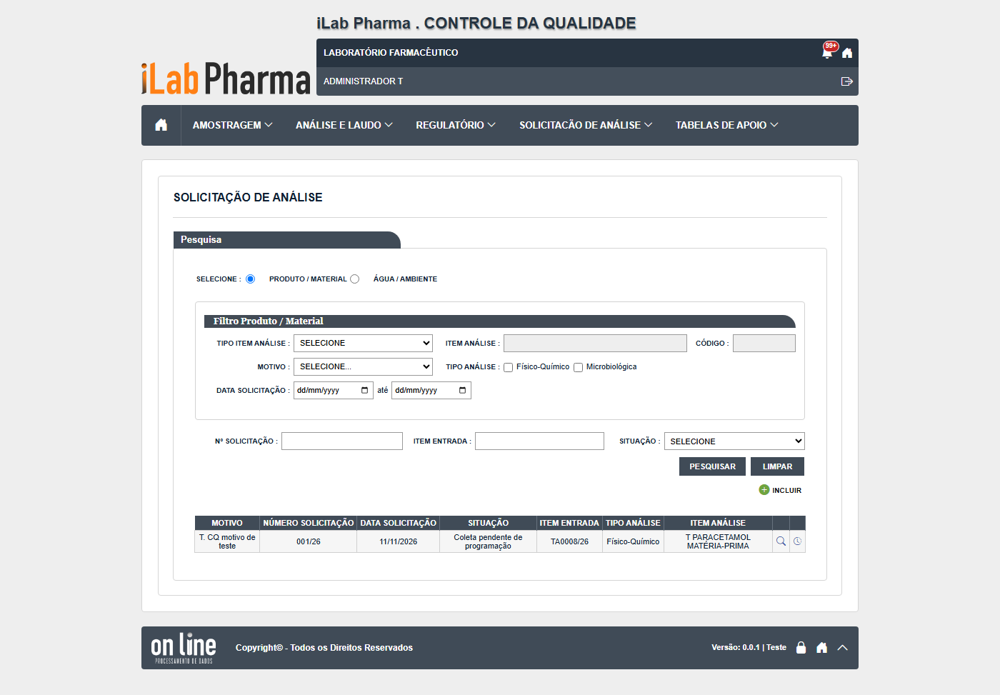
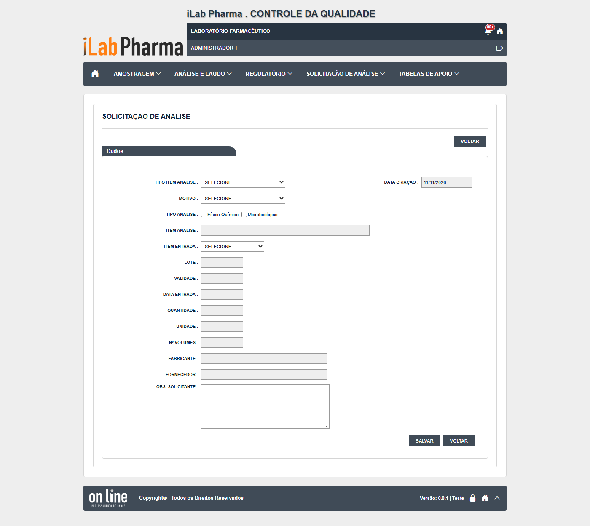
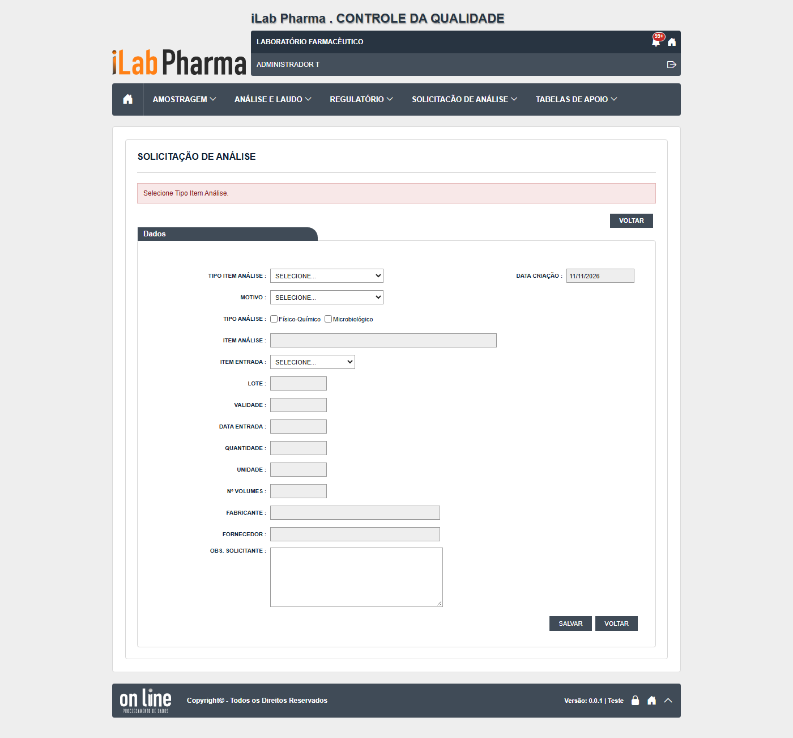
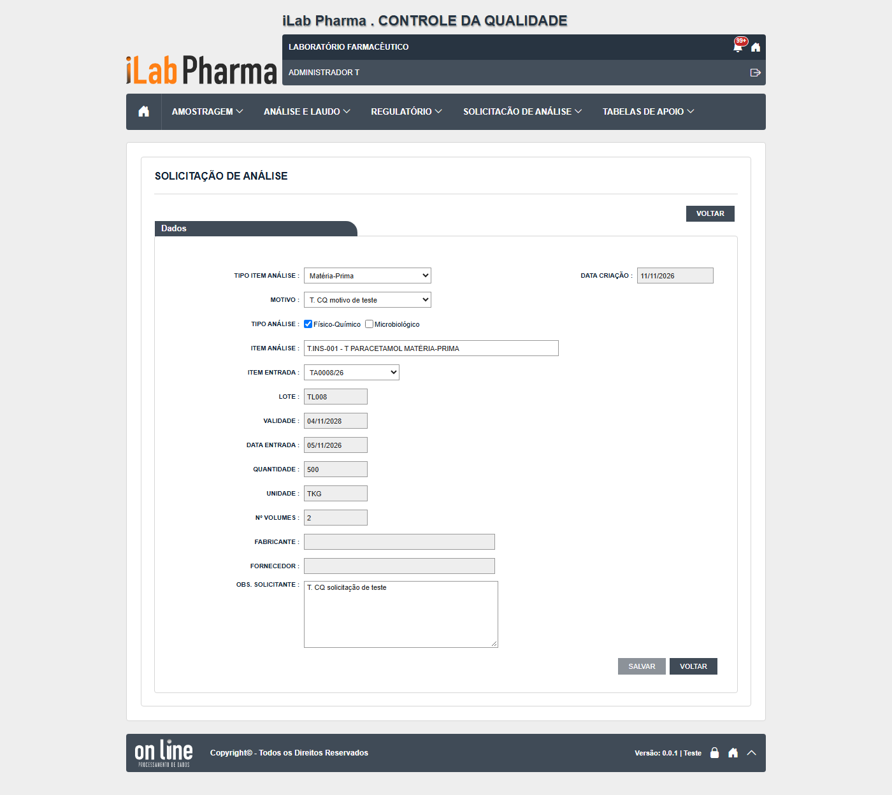
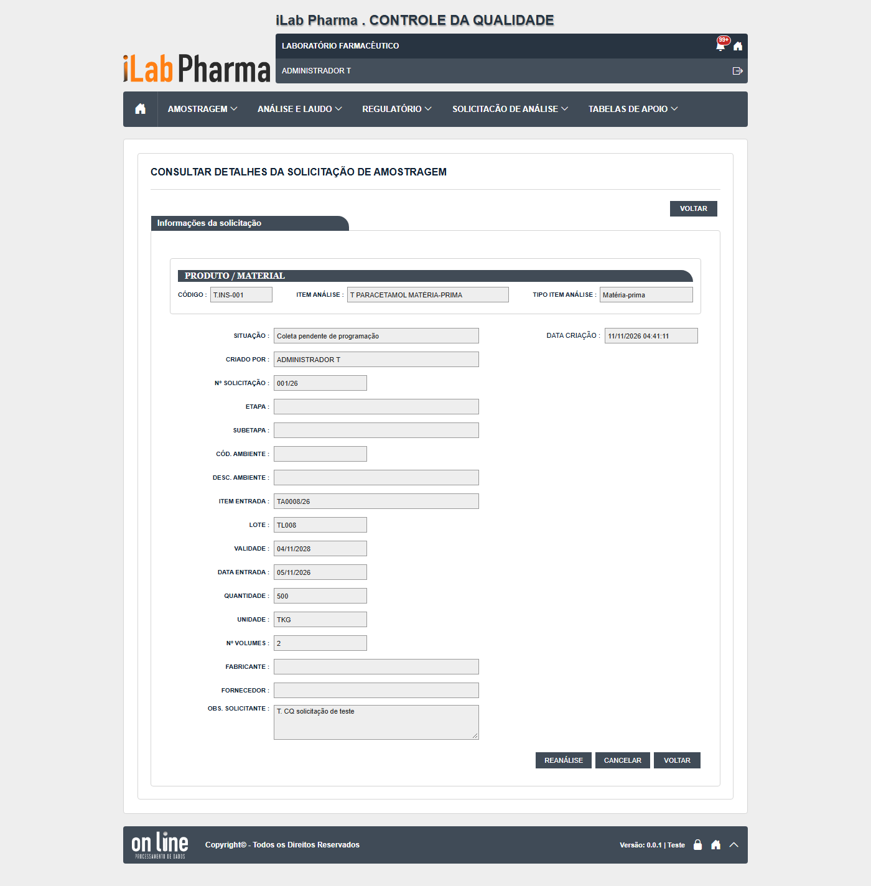
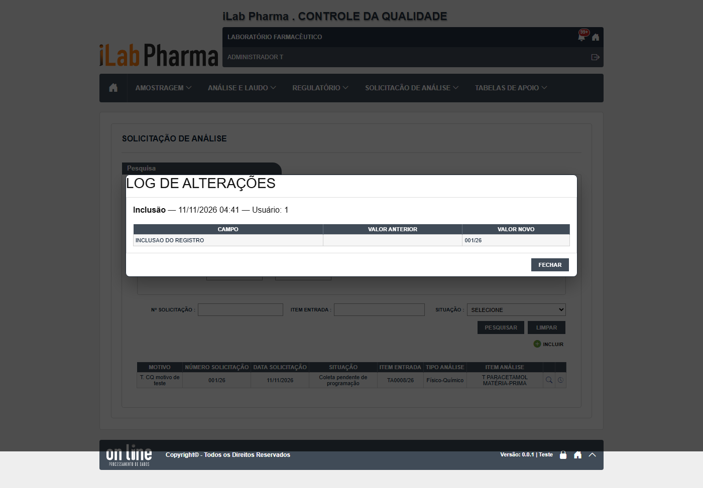
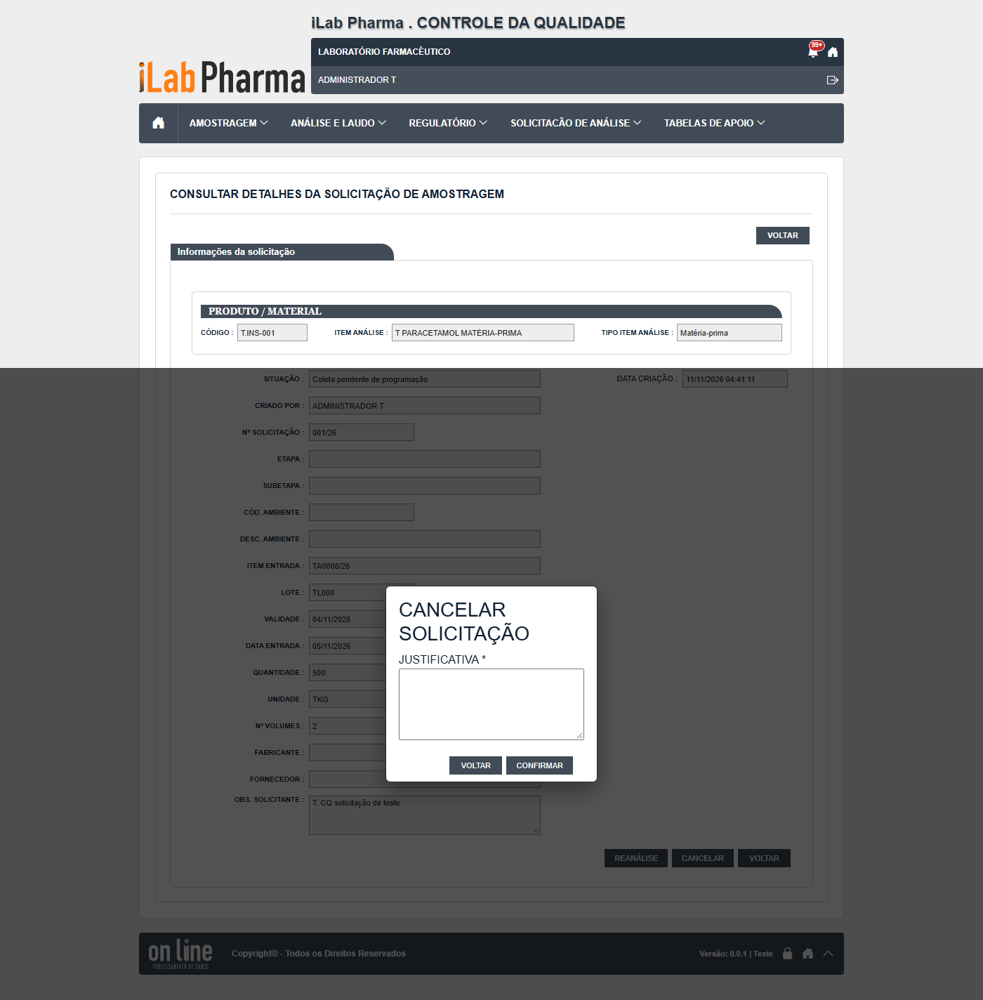
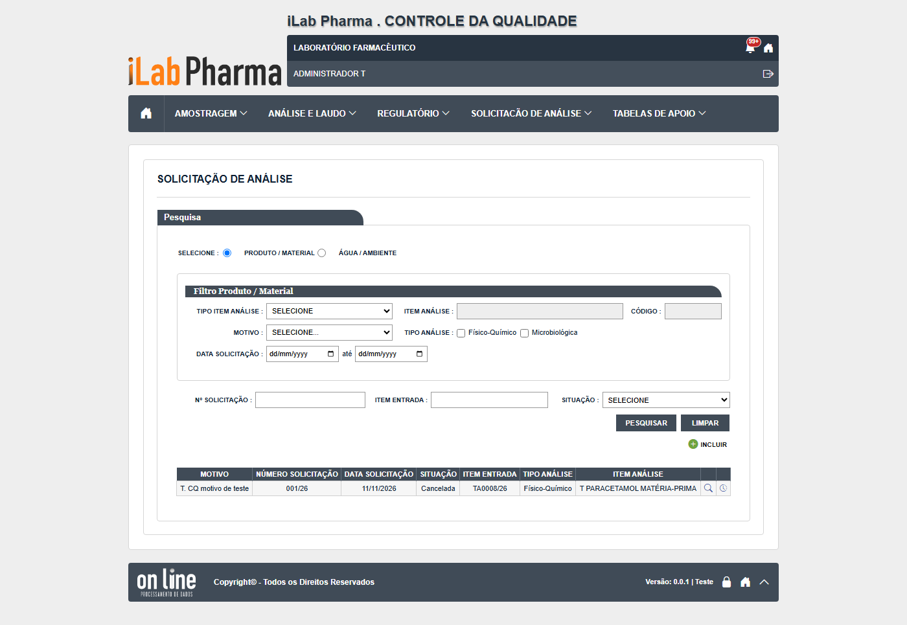
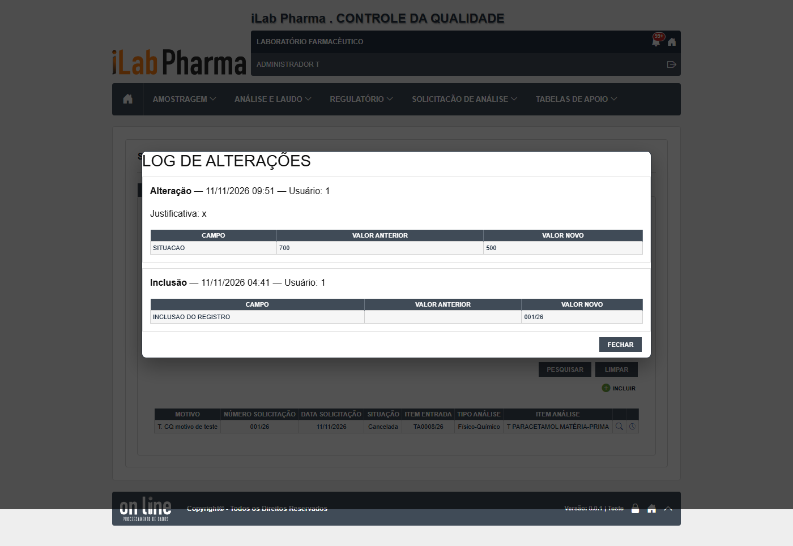

Passo a passo
Consultar
- Abrir a tela. No menu Solicitação de Análise, clique em Solicitação de Análise. A tela abre com a opção PRODUTO / MATERIAL marcada (a outra é ÁGUA / AMBIENTE) e o quadro Filtro Produto / Material com: Tipo Item Análise, Item Análise e Código (os dois em cinza até escolher o tipo), Motivo, Tipo Análise (caixas Físico-Químico e Microbiológica), Data Solicitação (de e até, formato dd/mm/aaaa), Nº Solicitação, Item Entrada e Situação, e os botões PESQUISAR, LIMPAR e INCLUIR. A lista não aparece até pesquisar.

A imagem mostra a tela ao abrir, com a opção Produto / Material marcada, o quadro de filtros e os botões PESQUISAR, LIMPAR e INCLUIR; ainda sem lista.
- Pesquisar. Preencha o que quiser e clique em PESQUISAR. Sem nenhuma solicitação, a tela diz "Nenhuma solicitação encontrada." (como foi no início da rodada). A lista mostra as colunas MOTIVO, NÚMERO SOLICITAÇÃO, DATA SOLICITAÇÃO, SITUAÇÃO, ITEM ENTRADA, TIPO ANÁLISE e ITEM ANÁLISE, e, na linha, dois ícones: a lupa (Consultar detalhes) e o relógio (histórico, "LOG").

A imagem mostra a solicitação 001/26 (motivo "T. CQ motivo de teste", data 11/11/2026, situação "Coleta pendente de programação", item entrada TA0008/26, Físico-Químico, item "T PARACETAMOL MATÉRIA-PRIMA") e os ícones de lupa e relógio no fim da linha.
O conjunto ÁGUA / AMBIENTE (filtros e inclusão próprios) não foi testado na versão nova. No legado ele existia, com ponto de água ou sala em vez de item e lote (do legado; a confirmar).
Incluir uma solicitação (produto / material)
- Abrir a inclusão. Com PRODUTO / MATERIAL marcado, clique em INCLUIR. Abre o quadro Dados: Tipo Item Análise, Data Criação (somente leitura, a data de hoje), Motivo, Tipo Análise (Físico-Químico, Microbiológico), Item Análise, Item Entrada (lista de lotes) e, em cinza, Lote, Validade, Data Entrada, Quantidade, Unidade, Nº Volumes, Fabricante e Fornecedor, mais Obs. Solicitante e os botões SALVAR e VOLTAR.

A imagem mostra o formulário em branco, com a Data Criação 11/11/2026 já preenchida e os campos de lote em cinza.
- Salvar vazio (para conhecer a mensagem). Clique em SALVAR sem preencher. Aparece uma faixa rosa no alto da tela: "Selecione Tipo Item Análise." (só a primeira conferência: os demais campos obrigatórios não são citados).

A imagem mostra a faixa rosa "Selecione Tipo Item Análise." acima do formulário em branco.
- Preencher. Escolha o Tipo Item Análise (no teste, "Matéria-Prima"), o Motivo ("T. CQ motivo de teste") e marque o Tipo Análise ("Físico-Químico"). Digite o item em Item Análise e escolha na lista (no teste, "T.INS-001 - T PARACETAMOL MATÉRIA-PRIMA"). Escolha o lote em Item Entrada ("TA0008/26"): o sistema preenche sozinho Lote (TL008), Validade (04/11/2028), Data Entrada (05/11/2026), Quantidade (500), Unidade (TKG) e Nº Volumes (2); Fabricante e Fornecedor ficaram vazios. Escreva a Obs. Solicitante se quiser.
A imagem mostra o formulário completo, com o item T.INS-001, o lote TA0008/26 e os dados do lote preenchidos pelo sistema e a observação "T. CQ solicitação de teste".
- Salvar. Clique em SALVAR. O sistema grava e devolve o número da solicitação (no teste, 001/26; uma solicitação por tipo de análise marcado, conforme o legado, a confirmar na versão nova). Nos registros do teste não apareceu pergunta de confirmação (no legado havia "Confirma a inclusão da solicitação?") nem mensagem de sucesso: Ponto para validar.

A imagem, tirada no instante do clique, mostra o formulário preenchido com o botão SALVAR em cinza (gravando) e nenhuma mensagem de sucesso. A captura se chama "sucesso" no manifesto, mas não mostra uma mensagem de sucesso.
Ver o detalhe e o histórico
- Consultar detalhes. Na lista, clique na lupa. Abre uma tela com o título "CONSULTAR DETALHES DA SOLICITAÇÃO DE AMOSTRAGEM" (não "Solicitação de Análise"), só para leitura: quadro PRODUTO / MATERIAL (Código, Item Análise, Tipo Item Análise) e Situação, Data Criação (com hora), Criado por, Nº Solicitação, Etapa, Subetapa, Cód. Ambiente, Desc. Ambiente, Item Entrada, Lote, Validade, Data Entrada, Quantidade, Unidade, Nº Volumes, Fabricante, Fornecedor e Obs. Solicitante. No pé: REANÁLISE, CANCELAR e VOLTAR.

A imagem mostra o detalhe da 001/26: situação "Coleta pendente de programação", criada por "ADMINISTRADOR T" em 11/11/2026 04:41:11, lote TL008, e os botões REANÁLISE, CANCELAR e VOLTAR. O Motivo não aparece no detalhe.
- Ver o histórico. Na lista, clique no relógio. Abre a janela LOG DE ALTERAÇÕES com o cabeçalho "Inclusão — 11/11/2026 04:41 — Usuário: 1" e a tabela CAMPO / VALOR ANTERIOR / VALOR NOVO com uma única linha: "INCLUSAO DO REGISTRO ... 001/26". O botão FECHAR fecha a janela. O autor aparece como o número 1, não como o nome (DV-CQ-N-006), e o histórico da inclusão não traz os dados da solicitação, só o número.

A imagem mostra a janela LOG DE ALTERAÇÕES com a linha de inclusão e "Usuário: 1".
Cancelar
- Cancelar. No detalhe, clique em CANCELAR. Abre a janela CANCELAR SOLICITAÇÃO com o campo JUSTIFICATIVA * e os botões VOLTAR e CONFIRMAR. Sem justificativa, a tela recusa com "Informe a justificativa do cancelamento." (visto no teste, sem captura). Com uma justificativa de uma só letra, o sistema aceita (sem tamanho mínimo).

A imagem mostra a janela CANCELAR SOLICITAÇÃO, ainda vazia, sobre o detalhe da 001/26.
-
Conferir. Depois de confirmar, a solicitação passa a "Cancelada" na lista e o histórico ganha uma linha "Alteração — 11/11/2026 09:51 — Usuário: 1", com "Justificativa: x" (a letra usada no teste) e a mudança do campo SITUACAO de 700 para 500. Não apareceu mensagem de sucesso nos registros do teste.

Lista com a solicitação cancelada · clique para ampliar A imagem mostra a lista com a 001/26 na situação "Cancelada".

Histórico do cancelamento · clique para ampliar A imagem mostra o histórico com a alteração (justificativa "x", SITUACAO 700 para 500) acima da inclusão.
Reanálise
- O botão REANÁLISE, no detalhe, não foi testado na versão nova. No legado, ele abria a inclusão com os dados travados e criava uma nova solicitação cancelando a anterior (do legado; a confirmar). Ponto para validar.